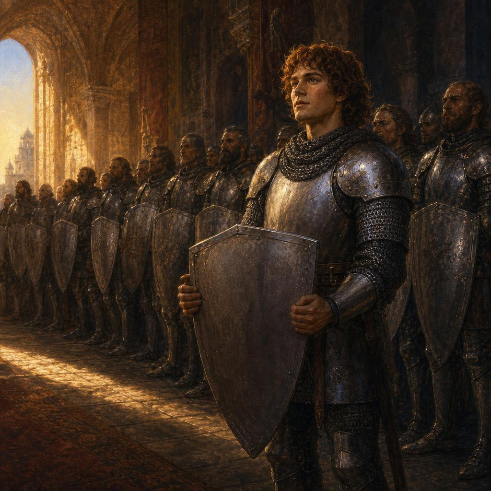
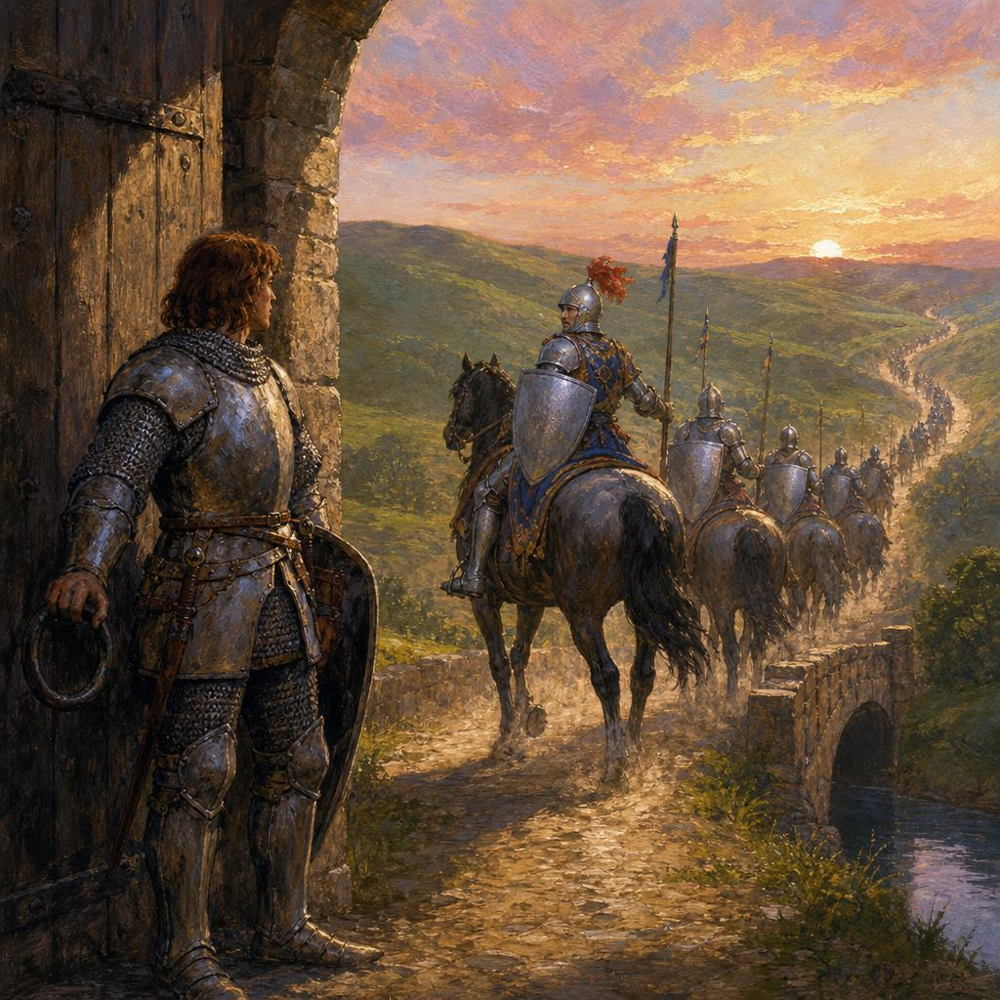
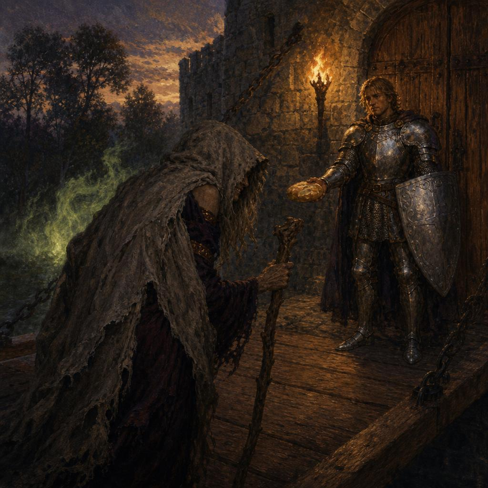
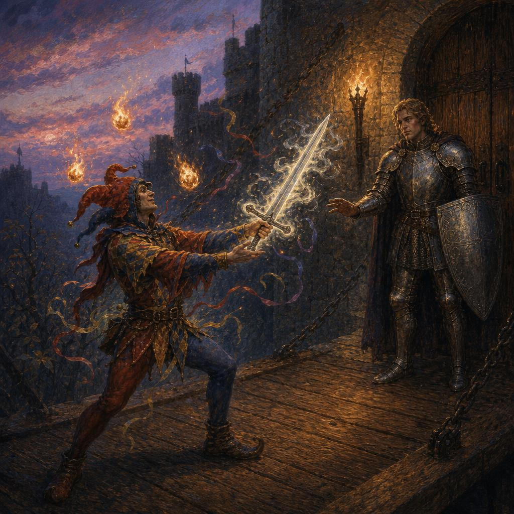
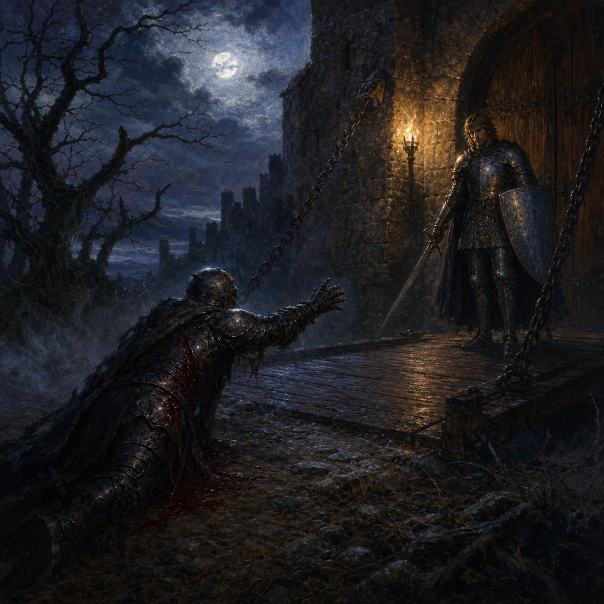
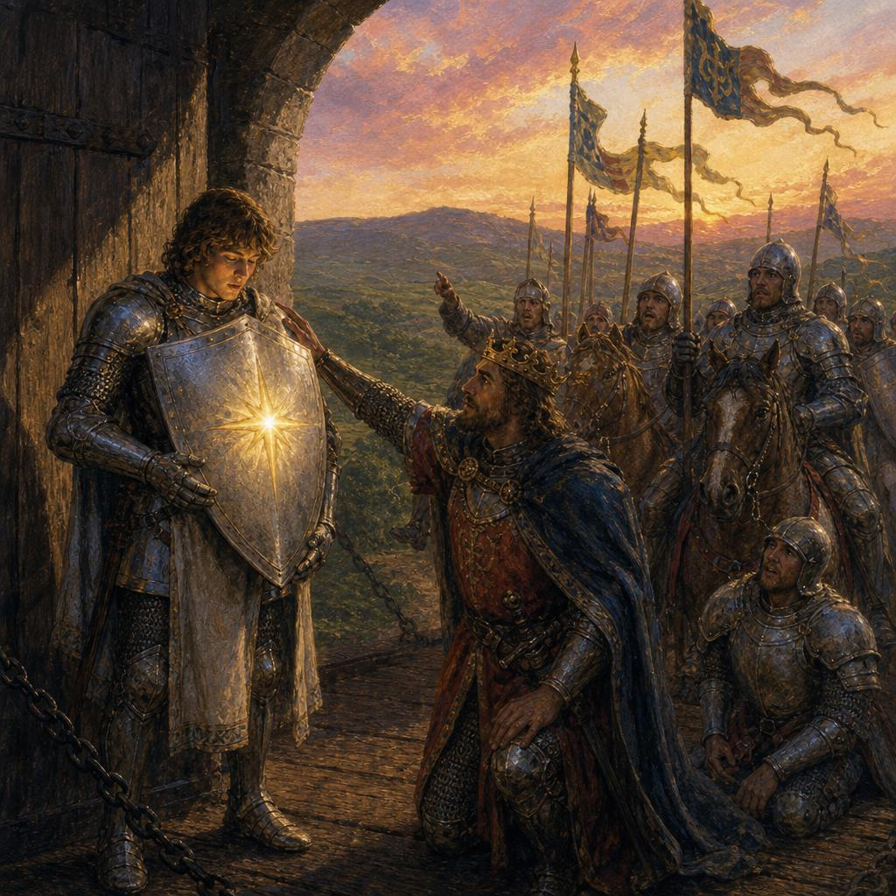
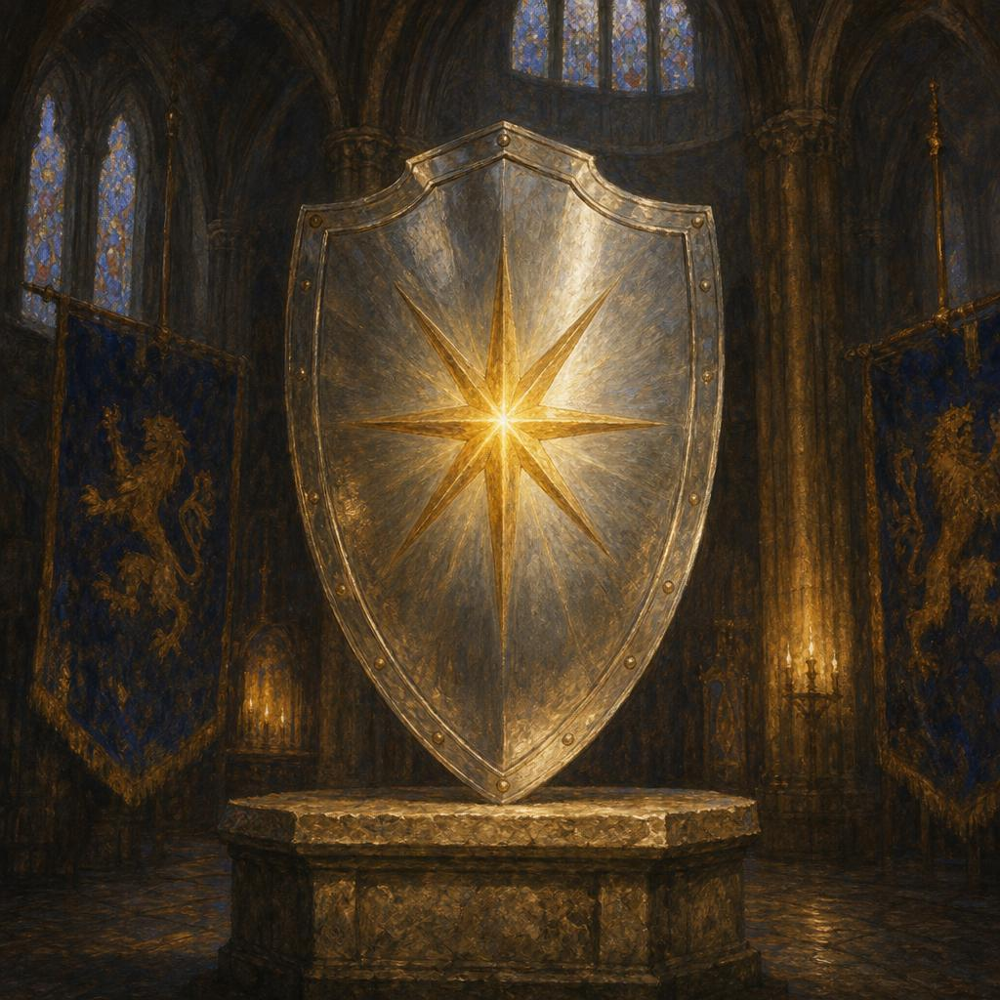

Where the Name Comes From
The Silver Shield
In Arthurian times there lived an order of knights whose shields shone bright silver. They were strong, kind, and brave.
Each new knight began with a dingy, untested shield. With every great deed the silver brightened, and the rarest honor of all was a golden star appearing at the shield’s center.
The youngest of these knights was a boy named Roland. His shield was dull and silver, without a single mark.
And more than anything, Roland longed to earn his star.

images/story-scene-01-intro.jpg
images/story-scene-02-intro.jpgThe Duty
One morning, word reached the castle. The dark knights had crossed the kingdom’s border. The captain called every knight of the order to ride out and meet them.
The knights mounted their horses. Their shields flashed in the rising sun. Roland’s heart pounded. At last, his chance for glory had come.
But the captain turned to him. “Roland. Someone must guard the castle gate. I am giving that task to you.”
And so the knights rode away, while Roland stayed behind, watching the dust settle on the empty road.
The Witch
Soon after the knights had gone, an old beggar woman came hobbling up to the gate. Her cloak was torn and her voice thin as paper.
“Brave young knight,” she said, “let me sit by your fire inside the walls. I am cold and starving. Surely no one will mind if you open the gate for an old woman.”
Roland’s heart ached for her. He almost lifted the latch. Then he remembered his captain’s words.
“Forgive me, good mother. I cannot open the gate. But wait, and I will bring you bread and a warm blanket.”
The old woman’s eyes flashed. She tore the cloak from her shoulders and stood revealed as a witch with a wicked grin, then fled cackling into the forest.

images/story-scene-03-intro.jpg
images/story-scene-04-intro.jpgThe Wizard
As the sun grew low, a strange laughter rolled up the road. A jester in bright motley danced into view, juggling fire and pulling silk from the air. Roland watched in wonder.
The jester drew from nothing a sword that shone with silver flame. “Take this blade, young knight. Ride and save your captain. I will watch your gate while you win your glory.”
Roland’s hand reached for the hilt. A magic sword. A chance to fight beside his brothers. Then he remembered the trust placed upon him.
“I cannot, friend. I was set here to watch, and watch I will.”
The bright sword withered in the jester’s hand into a child’s wooden toy. The motley fell away, and a tall sorcerer stood in his place. He hissed once and vanished down the dark road.
The Knight
At midnight, a wounded knight came crawling from the forest. His armor was bloodied, and his face was one Roland knew.
“Brother,” the knight gasped, “we are losing. The captain has fallen. Ride to us. I will hold the gate in your place.”
Roland’s hand trembled on his sword. His friends were dying. His brothers needed him. He stepped toward the gate. Then he remembered the duty placed upon him.
“I cannot leave this gate. Not for any battle but the one my captain gives me.”
The wounded knight rose to his full height. His armor turned black, his face turned cruel. He cursed Roland with a voice like cold iron and fled into the trees.

images/story-scene-05-intro.jpg
images/story-scene-06-intro.jpgThe Star
At dawn, the road filled with the sound of horses. The knights returned weary and dusty, but victorious.
As they neared the gate they slowed, murmuring among themselves, their eyes wide with wonder. They pointed at Roland and whispered. Roland looked behind him and beside him, searching for what they saw.
Then the king himself rode forward and spoke softly. “Your shield, Roland. The star.”
Roland looked down. There upon his plain silver shield shone a single, bright golden star. Trembling, he told them of the witch, the wizard, and the dark knight at the gate.
The king laid a hand on his shoulder. “You faced the hardest battle of all, Roland. And you did not yield.”

images/story-scene-07-intro.jpgThe Lesson
The silver shield is humility. The golden star is the reward for the dirty work no one watches.
It is given to those who hold the line for the bigger picture, when every selfish desire whispers to wander off. Roland was honored not for the battle everyone watched, but for the gate everyone forgot.
And this is why we built Silver Shield.
Small business owners spend their days holding the gate. Answering the email, chasing the invoice, doing the unseen work that keeps the kingdom standing. The world chases the loud battles. The real work is at the gate.
We carry that work for you. The repetitive tasks, the systems that need watching, the things that wear you down. We create your business its very own Roland, who will never leave the gates unguarded. Demand is climbing, so click below to save your spot now.
You ride to the battles that matter. We will guard the gate.
Inspired by Sir Roland and the Knights of the Silver Shield by Raymond Macdonald Alden, 1906.